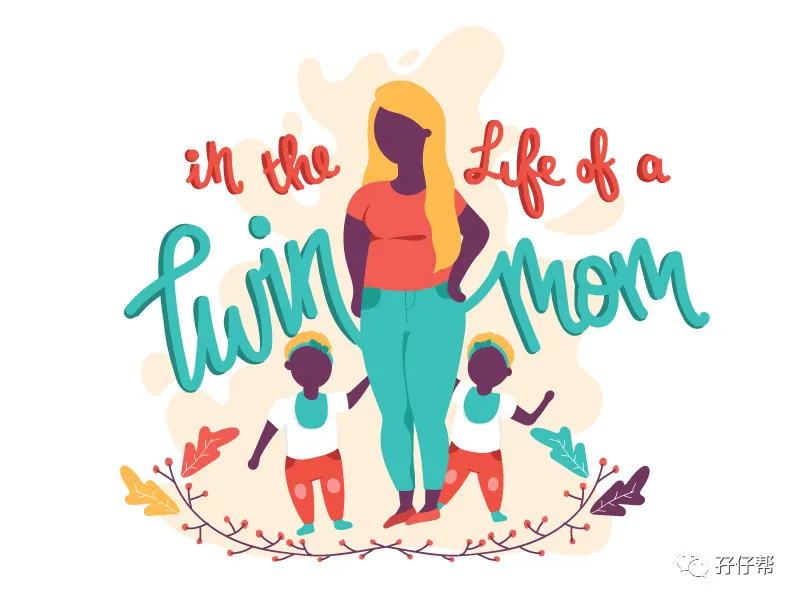
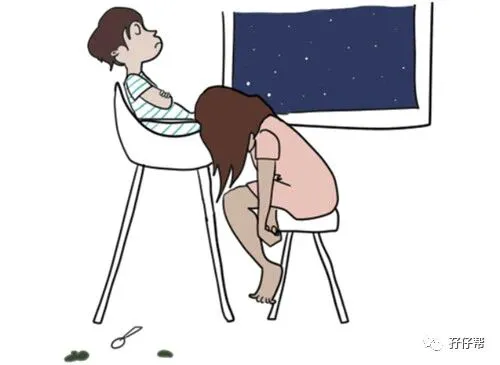

文|圆圈妈，一个文思如尿崩的双胎妈妈
图|来自网络，如有侵权，请联系删除
· 正 · 文 · 来 · 啦 ·
几乎每一位饱经风霜的前辈（家有双胞胎孩子三岁以上）都会意味深长地说：“双胞胎上幼儿园后，终于过上正常人的生活！”
其实，这种真心话，信三成即可，剩下七成，等真正轮到自己的时候便会真相大白！
今天的推文主题：
浅谈3--4岁的双胞胎睡眠特点
以下文字节选自《双胞胎睡眠圣经》
第二部分第五章
不同年龄段儿童对睡眠的不同需求
3～4岁的孩子
在3～4岁的孩子中,大约50%的孩子白天不再睡觉,他们会在晚上睡足12个小时来满足他们的睡眠需求。
在我的研究中,当他们长到4岁的时候,有一半的孩子仍然有睡午觉的习惯,虽然这些孩子们并不是每天都睡午觉(大概每周会有5天午觉时间)。
如果你的双胞胎们到了这个年龄还有午睡的习惯,但是很多活动此时可能会和他们午睡时间相冲突,所以如果他们因为日间活动而失去午睡时间完全可以理解。
不良的睡眠习惯会不知不觉地养成,尤其是在夏天。如果你的孩子需要很长的睡觉前准备时间(他们要听很多的睡前故事,睡前需要先洗澡,需要把窗帘拉好等),或者当你把他们从婴儿床换到普通的床上时,他们总是跑来跑去,这时你可能需要制订一些睡眠规则来激励你的孩子们,使他们在需要睡觉的时候能乖乖地躺在床上。
每个家庭的睡眠规则都会不同,但是规则核心是孩子们可以理解规则并且记住。
当孩子们开始有时间观念的时候,一些家庭规定孩子们必须躺在床上,闭上眼睛。也有一些家庭规定孩子在睡觉时间不能离开自己的房间,或者等到听到事先约定好的闹钟响起才可以离开房间等。
看护者还可以为孩子们制作一个醒目的“睡眠守则海报”,比如“宝宝和贝贝的睡觉守则"。将海报挂在孩子们卧室的墙上,这样既可以随时提醒孩子们遵守约定好的睡眠规定,同时也可以提醒看护者贯彻执行这些规定。
相信我,亲爱的读者,这样一张海报所产生的作用会超出你的想象。在孩子们午睡和晚间入睡前重复你们制订的睡觉守则,明确指出如果他们遵守规则将会得到何种奖励,如果违反规则会有怎样的后果。
比如,如果遵守约定,好好睡觉就会得到美味的酸奶。你可以准备好伴有水果和坚果的美味酸奶,当孩子们按照规定完成午觉后,就可以得到一份美味的酸奶。
荣誉星星表对鼓励孩子们遵守睡眼规则也十分有效,比如当孩子们得到一定数量的星星后就可以得到一份神奇的礼物,得到玩具或者邀请朋友来家里玩等。
这样一来,孩子们就会明白遵守规则、养成良好的睡眠习惯就会获得奖励。所以,亲爱的家长们,找到孩子们最喜欢的激励方式，然后开始实践吧!
如果孩子们违反了睡眠守则,他们就应该受到相应的惩罚。但我觉得这种惩罚不应该限制孩子们听音乐、画画、做手工、读书或者玩耍的时间,也许把他们最喜欢的某件玩具暂时没收可以成为一个行之有效的惩罚措施。
个人拙见
熬到双胞胎3岁以上，基本上就能看到一丝微弱曙光在召唤我们了！
双胞胎上幼儿园，意味着在集体规则的影响和约束下，孩子们的作息会相对规律很多，平时一些不好的睡眠习惯，在老师的引导和大集体的熏陶下，大部分都能得到纠正，并逐渐养成良好的作息习惯。
已经入园的圆圈兄弟恰好就是这种情况，因幼儿园每天都有两个半小时的午睡，加上在园时，运动量加大，他们晚上基本上无需“挣扎”多久，都能在9点半之前入睡，可把老母亲我激动得好想高唱一曲：“我美了美了，我醉了醉了”
但，我还是高兴得太早了！
这种靠规则约束形成的睡眠习惯终究不靠谱，一个假期就能让孩子们原形毕露！
到了周六日，圆圈依然坚守着不到十一点坚决不睡觉的方针政策，什么星星奖励，睡觉守则，睡眠仪式，各种威逼利诱统统都不管用！
白天如果不外出，他们在家玩玩具看书，哪怕是互相对着对方发呆傻笑也不会主动去睡午觉。
不睡午觉的结果就是，7点钟吃晚饭时，嚼着嚼着，噗通一声，直接趴在桌上睡了！
终于知道为何有人会如此调侃：毁掉一个妈妈，一个假期足以！
以前很渴望周六日，现在真的巴不得天天都是周一到周五。
以前巴不得他们吃了睡，睡了吃，现在真的巴不得他们使劲跑啊跳啊，把能量消耗完了，晚上才能早点睡！
有人说，双胞胎4岁后就好带很多！从某种意义上看，的确如此！尤其体现在双胞胎的睡眠上。
只要孩子们入园了，并形成了规律的作息，基本上没有太多的睡眠困扰！
而解决了双胞胎孩子的睡眠问题，意味着我们再也不需要被迫欣赏着凌晨两三点钟的月亮是圆还是扁了？
我们终于可以四脚朝天地呼呼大睡了！
现在我每天要早起张罗一家四口的早餐，看着他们哥俩横七竖八地躺着，怎么踹都吵不醒，心里感慨极了。
我终于看到他们婴儿般的睡眠了：一觉睡到大清早，彼此从不打扰！
娃儿们睡得好，才是真的好！
回想这4年来，我与这两枚睡渣的那些点点滴滴，忍不住在心里为自己的熬出头点赞！
当然，这又是新的开始！同时也将是睡训的终极目标，那就是传授双胞胎孩子们一种自主入睡的技能，而不仅仅是习惯！
在双胞胎孩子们还没有时间观念和自我约束控制能力之前，建立一个让彼此都易于接受的睡眠规则，并坚持下去，让孩子们受益终生！
亲爱的双胞胎父母们，任重道远呐！
有人说，在睡眠训练上，不管家长作不作为，孩子们终究会长大，会学会自主入睡。
我想说，睡眠训练只是其次，更多的是我选择了一个，别人认为有点虐，但我觉得除了虐还很甜的方式与我的双胞胎孩子们相处。
马克有一句话，说的极是。
「每个家庭的睡眠规则都会不同,但是规则核心是孩子们可以理解规则并且记住。」
哪种方法好，哪种不好这些都不重要，或者说也没有绝对的答案，关键是我听从了内心的真实想法，并让孩子们也能感知到，从而愿意跟我亲密交流！
双胞胎各年龄段的睡眠特点就分享到这里了！从0—4岁，每个阶段都有马克的指导建议和圆圈妈个人的经验分享。
欢迎更多双胞胎家庭加入到我们的组织分享你们家双胞胎的睡眠故事！
接下来要分享的是让双胞胎安然睡去的5个步骤！主要针对4月龄以内的双胞胎宝宝，敬请关注。
双胞胎各年龄段的睡眠特点汇总
双胞胎家庭的救命稻草：《双胞胎睡眠圣经》
《双胞胎睡眠圣经》解读01：双胞胎宝宝的睡训，何时开始为宜？
《双胞胎睡眠圣经》解读02：初月龄的双胞胎睡眠特点（上）
《双胞胎睡眠圣经》解读03：初月龄的双胞胎睡眠特点（下）
《双胞胎睡眠圣经》解读04：2月龄的双胞胎睡眠特点
《双胞胎睡眠圣经》解读05：3月龄的双胞胎睡眠特点
《双胞胎睡眠圣经》解读06：4月龄的双胞胎睡眠特点
《双胞胎睡眠圣经》解读07：5月龄的双胞胎睡眠特点
《双胞胎睡眠圣经》解读08：6–9月龄的双胞胎睡眠特点
《双胞胎睡眠圣经》解读09：9–12月龄的双胞胎睡眠特点
《双胞胎睡眠圣经》解读10：1–2岁双胞胎睡眠特点
《双胞胎睡眠圣经》解读11：2–3岁双胞胎睡眠特点
-END-
一好文推荐一
一加入社群一
一关注孖仔帮一
点击“阅读原文”，直达双胞胎育儿网站www.sgguy.com.
喜欢这个睡眠圣经吗？，请点“在看”


